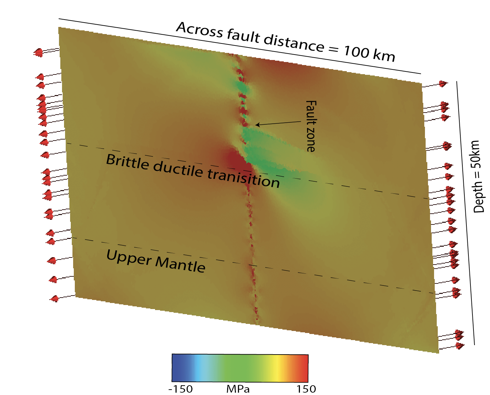
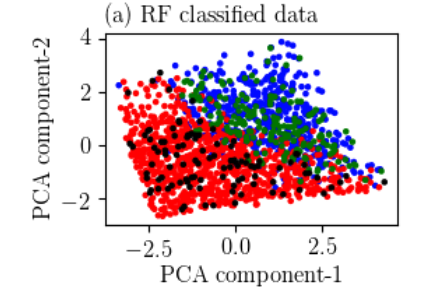
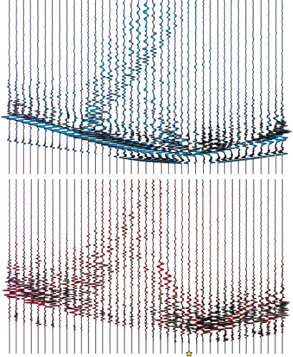

We perform physics-based simulations of earthquake rupture propagation on geometrically complex strike-slip faults to examine the off-fault stress changes resulting from dynamic fault slip. We consider many different realizations of the fault profile and use the output of our dynamic rupture simulations to calculate the Coulomb failure function (CFF) for each realization. We analyze the effects of fault maturity as well as the self-affine character of the fault surface on the calculated stress field. Details of the project are avaliable in pdfs present in my publication page.
We couple the short-term (dynamic) phase and the long-term (quasi-static) phase of an earthquake to understand the physics of an earthquake cycle. For dynamic phase, we solve the 3D wave equation using finite differences and then use the stresses and strain out of the dynamic phase to solve the quasi-static phase of an earthquake. For solving the quasi-static phase, we consider finite element method to solve the momentum balance equation. The finite difference code solves the full wave equation in 3D including inertial term. The time step size is chosen based on Courant–Friedrichs–Lewy (CFL) technique. The finite element codes solve the momentum balance equation where the inertia term is damped to produce the quasi-static behavior. The inertia term is damped using mass scaling technique. Both of these codes are present in the repositories link in my webpage. Details of the project are avaliable in pdfs present in my publication page.
We estimating the max. possible magnitude of an induced earthquake in Oklahoma using Machine learning approach. We do this by running multiple ruptures on a complex strike-slip fault with inherent fault roughness. The rupture nucleation is provided through the elevated pore pressure. We use full length of the fault (400 parameter), stresses ( 3 parameters), Slip weakening law (3 parameters), RMS height of fault (1 parameter) with 4000 rupture simulations to train our model for a regresssion problem that can predict earthquake magnitudes. To train a model, we use neural networks with three hidden layers and 10 units in each layer. This work is build upon a previous study done by our group (Elizabeth Gilmour). Details of the project are avaliable in pdfs present in my publication page. The ML code is present in repositories link.
We perform three-dimensional (3D) deterministic earthquake ground motion simulations for the northern Canterbury plains, Christchurch and the Banks Peninsula region of NewZealand, which explicitly incorporate the effects of the surface topography. The simulations are done using Hercules, an octree-based finite-element parallel software for solving 3D seismic wave propagation problems in heterogeneous media under kinematic faulting. We describe the efforts undertaken to couple Hercules with the South Island Velocity Model (SIVM), which included changes to the SIVM code in order to allow for single repetitive queries and thus achieve a seamless final-element meshing process within the end-to-end approach adopted in Hercules. Details of the project are avaliable in pdfs present in my publication page.